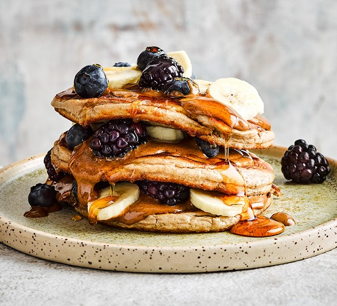

Protein Pancakes

Delicious protein pancakes that will fuel your day!
These protein pancakes will contain 12g of protein each when made with a single scoop of whey protein.
As well as low in fat and moderate carbs, you can be sure to hit that sweet tooth and keep your diet in check!
Simply follow these easy steps to creat these pancakes and youll never want normal pancakes again!
Ingridients
- Protein powder
- Vanilla essence
- Oatmeal
- 1 Egg
- Milk of choice
All ingredients to blender
- Add 1 scoop protein
- Add 1Cup oatmeal
- Blend untill fine texture with no clumps
- Add 1Cup of milk
- Add 1 Egg
- Add 1tsp vanilla essence (or to taste)
- Blend untill thoroughly mixed
- Cook on frying pan 2 min each side
Serve topped with fruit and syrup of choice!